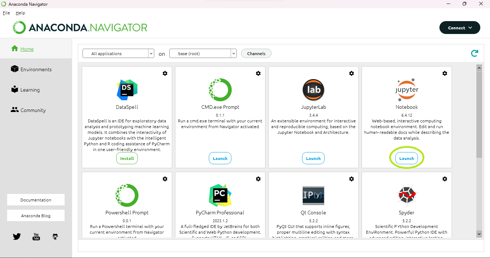
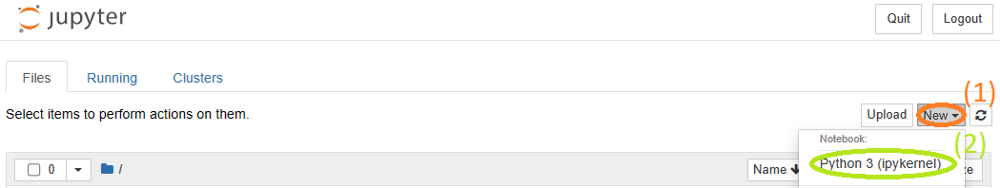
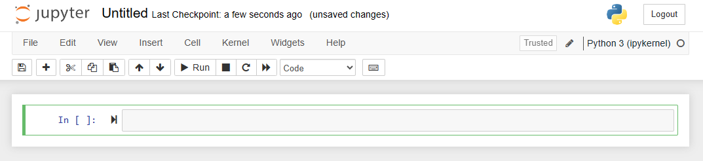
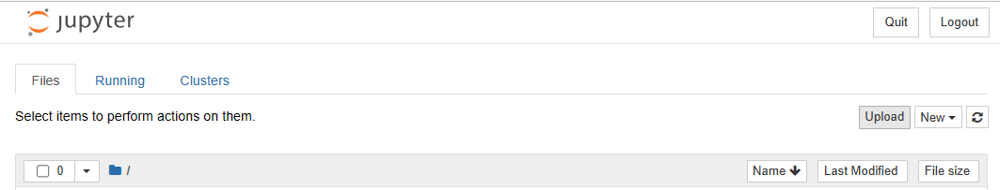
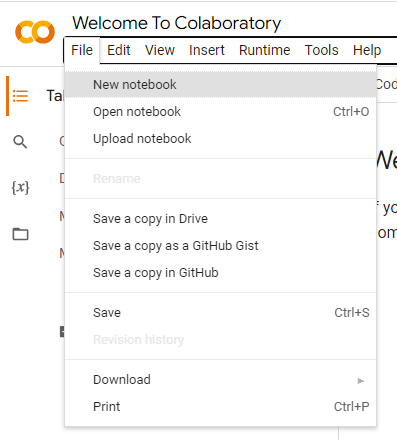

Jupyter Notebooks can be opened from Anaconda Navigator. Install by installing Anaconda (Navigator should automatically install alongside). After installing, open the Navigator. If you wish, you may first set up an environment. Then, hit the "Launch" button below Jupyter Notebook.

The Jupyter Notebook home page should open in a new window. From the home page, hit "New" and then "Python 3 (ipykernel)".

This will open a new notebook for you.

You can also hit "Upload" from the home page to upload existing notebooks you have downloaded.

These will show up as ".ipynb" files. Click on them to open.
That's it for opening Notebooks. Congratulations!
Using Colab Notebooks
We can also open Notebooks online at Google colab. Select the "File" tab and hit "New notebook".

If you instead hit "Upload notebook", you can upload an existing notebook. You're all set!